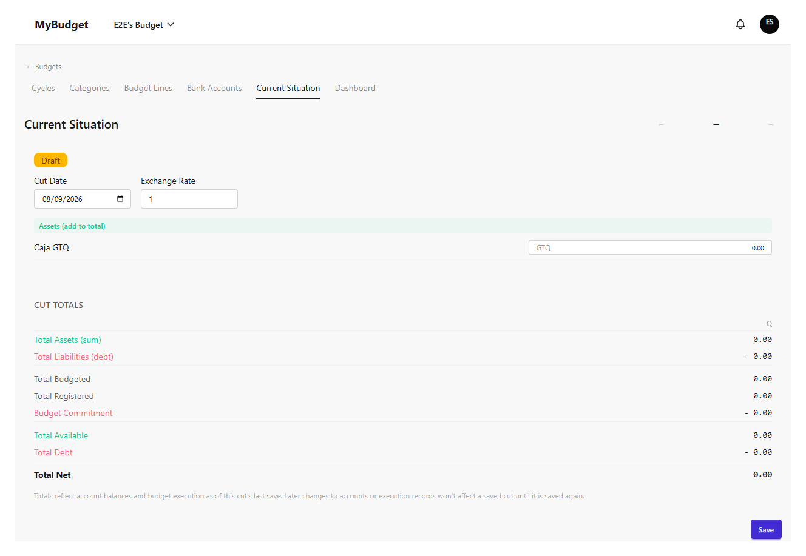
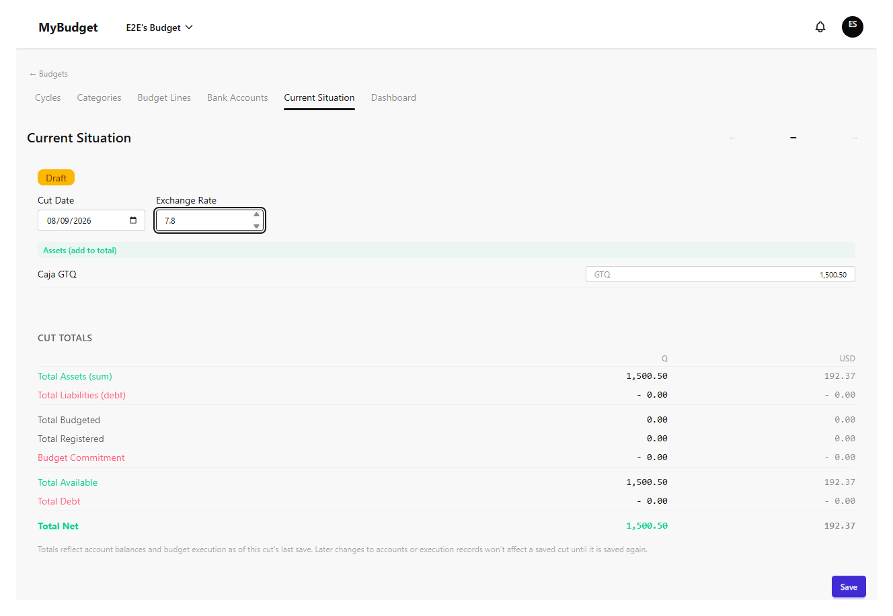
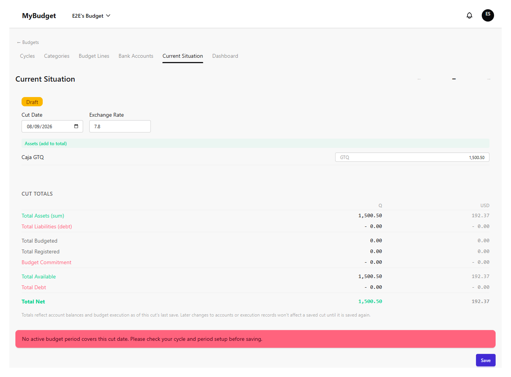
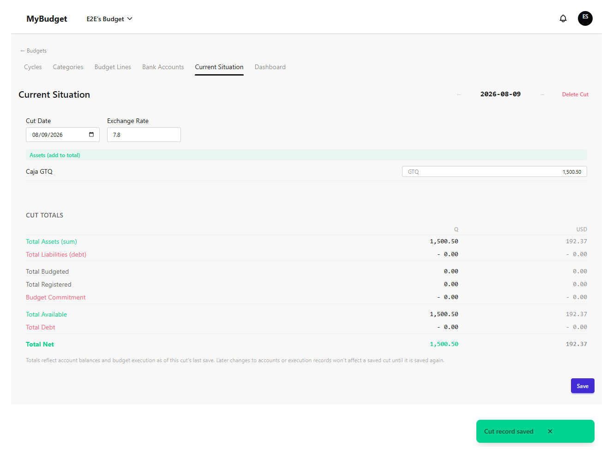
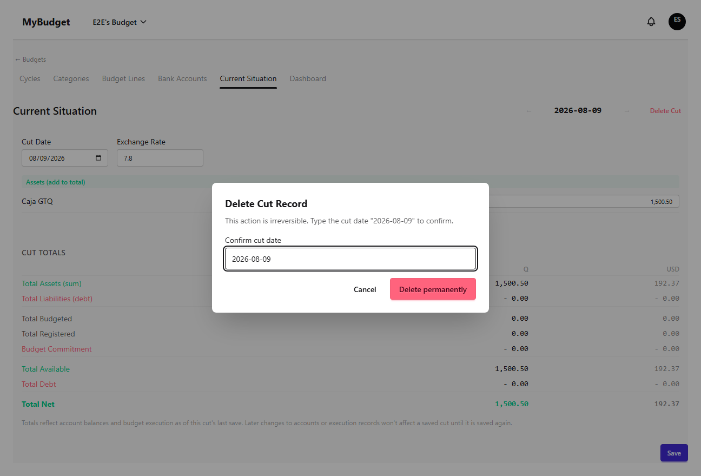
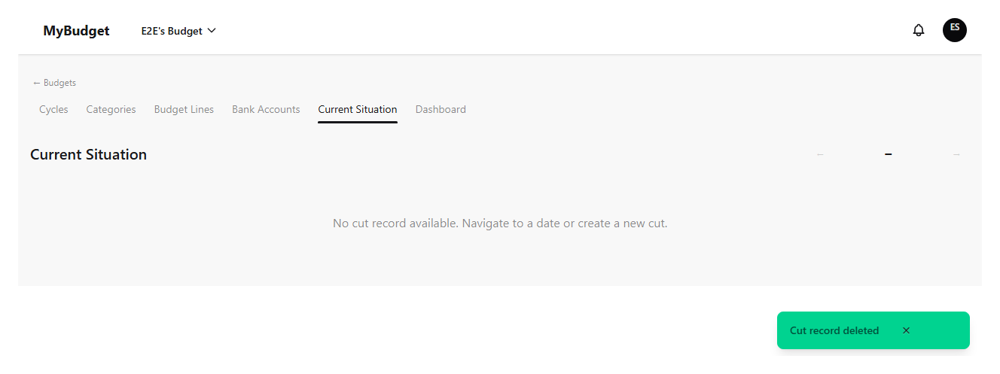

Situación actual
Un "corte" es una foto en el tiempo del saldo de cada cuenta bancaria, guardada contra una fecha específica. Los cortes son lo que alimenta el historial del panel y te permiten comparar tu posición real con lo que el presupuesto esperaba. Este capítulo cubre cómo navegar entre cortes, ingresar saldos, guardar, leer los totales, y eliminar un registro de corte.
Navegar entre fechas de corte
El navegador de fechas se mueve un corte a la vez, hacia adelante o atrás, saltando solo entre fechas que ya tienen un registro guardado. Elegir una fecha sin registro existente abre una consulta sobre cómo iniciarla: arrancar cada cuenta en 0 ("En blanco"), copiar los saldos del corte guardado más reciente ("Clonar desde el último registro"), o copiar desde una fecha anterior específica que elegís de una lista. Hasta que guardés, la nueva fecha es un Borrador.

Ingresar saldos y el tipo de cambio
Las cuentas se dividen en dos grupos según su tipo del capítulo Cuentas bancarias: activos que suman al total, y pasivos que restan. Cada fila toma el saldo de la cuenta a la fecha del corte; el registro también lleva un único tipo de cambio usado para convertir cualquier cuenta en moneda alternativa a la moneda principal del presupuesto para los totales de abajo.

Guardar un corte
Solo operadores, administradores y el propietario pueden guardar. Guardar requiere un período de presupuesto activo que cubra la fecha del corte — si todavía no existe ninguno, el guardado se rechaza en lugar de aceptarse silenciosamente contra nada, ya que un corte sin período correspondiente no tendría datos de ejecución con qué compararse.


Leer los totales y el resumen de ejecución
El panel de totales suma activos, pasivos y posición neta al tipo de cambio del corte, junto a un resumen de ejecución presupuestaria — total presupuestado, total registrado, y el compromiso restante — para el período en el que cae la fecha del corte. Estas cifras son una foto: reflejan los saldos de cuentas y la ejecución al momento del último guardado de este corte, así que cambios posteriores en cuentas o registros de ejecución no mueven los totales de un corte guardado hasta que lo vuelvas a guardar.
Eliminar un registro de corte
Eliminar un corte es permanente, así que la confirmación te pide escribir la fecha exacta del corte antes de que el botón de eliminar se habilite — un simple clic de "confirmar" no alcanza para una acción irreversible. Una vez eliminado, la vista vuelve al corte restante más reciente, si existe alguno.

